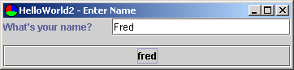
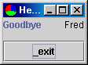

Building on the "Hello World" example, this application demonstrates a two-way data-binding between model and view, allowing programmatic changes to a model's state to be reflected in any views on that model:


The first View, based on the first view from "Hello World", now includes a button that changes the model's "name" to "Fred". This programmtic change to the model will be seen in the textfield that provides a view on the name property. So we see that changes from the user interface are populated into the model, and that changes to the model can be populated back into the view.
Note that this repopulation from model to view is only semi-automatic in this example: the application code needs to tell the view to refresh itself after the model change. Scope also supports fully automatic refresh for models that implement change notification: see samples.swing.activemodel1
This is the same launcher as used in "Hello World".
This is the same as HelloController used in "Hello World" with the addition of a handler for a new Control, the "CHANGE_TO_FRED" Control, which causes the Controller to set the model's name to "Fred" as follows:
public static final String CHANGE_TO_FRED = "fred";
protected void doHandleControl(Control inControl) throws ControlException {
if (inControl.matchesID(GOT_NAME)) {
doGotName();
} else if (inControl.matchesID(CHANGE_TO_FRED)) {
doChangeToFred();
}
}
protected void doChangeToFred() {
((Hello2Model)getModel()).changeNameToFred();
((Hello2View1)getView()).refresh();
}
The Hello2Model is the HelloModel used in "Hello World" with the addition of a method that changes the name to "Fred":
public void changeNameToFred() {
setName("Fred");
}
This view is the same as HelloView1 in "Hello World" except that the button issues a CHANGE_TO_FRED Control.
This view is the same as HelloView2 in "Hello World".